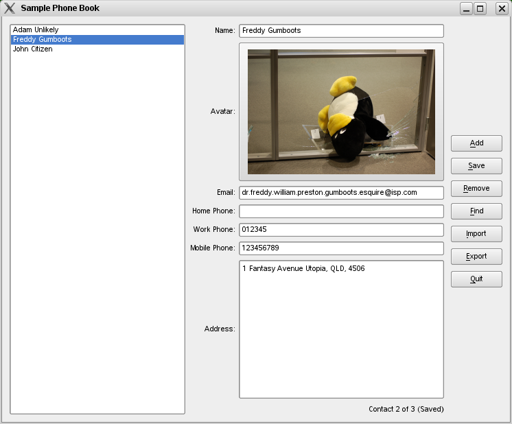

|
Home · All Classes · All Functions · | |
Files:
This example shows how to write a simple phonebook with the Contacts API.
This application was written to provide an example to developers of how to use the Qt Contacts API. It also provides an example implementation of a vCard* serialiser and deserialiser, which enables persistent storage of QContact objects if no other persistent-storage backend is available.
[*] vCard is a registered trademark of the Internet Mail Consortium
Most people have a need to store information (such as addresses, telephone numbers and email addresses) of people that they know. This sample application provides a simple phone book which allows users to store certain pieces of information about their contacts, and save them to disc.
The application is aimed at desktop platforms as opposed to mobile platforms, and thus uses regular widgets as the basis of the interface. The main screen consists of a list view on the left, the current contact's details in the middle, and several navigation and control buttons on the right.

The interface of the application is similar to that found in the Qt Addressbook Tutorial. Indeed, several sections of its code (including the "Find Contact" dialog code, and some of the main window interface and initialisation code) was recycled.
The example is not intended to be feature complete. Only a very limited subset of detail types are supported by the application. It exercises only a very small portion of the Qt Contacts API.
Furthermore:
| Copyright © 2009 Nokia Corporation and/or its subsidiary(-ies) | Trademarks | Qt Mobility Project 1.1.0 |